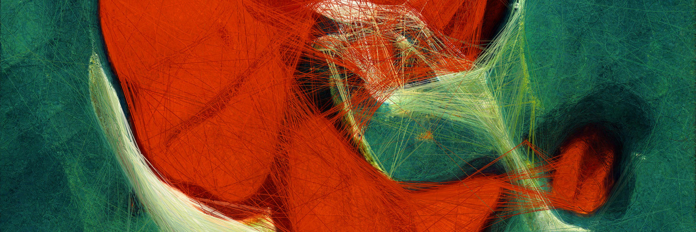
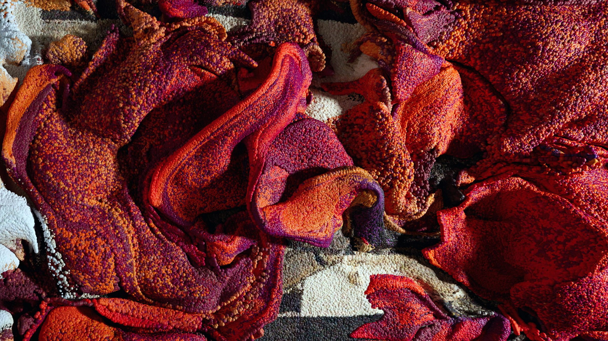

In recent months, the phenomenon of artificial intelligence has gained renewed interest as innovations in hardware and large quantities of data facilitated by the internet have made advanced machine learning models capable of complex language and art generation possible for the first time. Refik Anadol is an artist who uses these technologies to find patterns among thousands of existing artworks to create novel works without any human input. In his one-room, one-screen exhibition Unsupervised at the Museum of Modern Art in New York, he takes all of the works in the museum’s collection from artists spanning over 200 years and uses them to train a model which finds patterns within data to generate new and interesting images. The exhibition’s described purpose is to explore irrationality, fantasy, and hallucination and give the viewer a new understanding of art-making. However, the way it has been implemented appears to be at odds with this purpose. Its positioning on the ground floor within the museum’s main lobby where visitors stop momentarily before proceeding on to the museum’s main collection suggests transience, the idea that AI-generated art is little more than a passing fad and not something to be taken seriously. Despite the artist’s conception of his works as exploring irrationality, his methods of creating them are highly rational and mathematical. Overall, there does not appear to be any social commentary or discussion about the philosophy or ethics surrounding artificial intelligence. It seems as though the artist was more concerned with showing off what can be done with a sophisticated learning model and using the mystique and lack of understanding surrounding AI to generate interest in his work.
One of the key assumptions that is being made with this exhibition is that AI systems capable of image generation are indeed a new form of art-making. There is likely to be some debate about this, with computer scientists keen to describe their innovations as the next big thing in art, while those trained in more traditional art-making techniques argue it is little more than appropriation of existing works by real artists. In fact, artificial intelligence is nothing new. It dates back to the 1950s, and many of the algorithms for machine learning were discovered decades ago. It is only with advances in hardware and the availability of massive amounts of data via the internet that there has been this breakthrough in new applications. There are two categories of machine learning: supervised and unsupervised. Supervised learning involves giving objects labels, training a model using these labels, and using the model to identify new and previously unidentified objects. Unsupervised learning does not rely on labels but rather uses probability theory to find similarities among uncategorized data. Refik Anadol’s exhibition utilizes the latter method, from which it takes its title and which gives his images their abstract quality, befitting of the museum’s overall aesthetic.
The scale of the exhibition is impressive—it takes up an entire wall with a cinematic-sized screen and is the very first thing visitors see upon entering the museum. There is ample ambient light from the floor-to-ceiling window in the museum’s lobby and an accompanying ethereal soundtrack playing in a loop on a surround-sound system. The curator appears to have given the exhibition a center-stage presence in proportion to its prominence in the current cultural zeitgeist. What I had expected to find was a quiet setting off in a darkened room with little foot traffic, a place for contemplation and reflection. Instead, I was met with a phalanx of cell phones obstructing the view of the display, the otherworldly soundtrack nearly drowned out by the crowd of tourists. I do not know whether it was the artist’s intention to have the work placed in such a prominent location or the curator’s, but it was definitely not a location conducive to deep thought. What it suggested was an element of frivolity—something seemingly big and impressive but ultimately without substance, a sideshow or temporary distraction from the more serious fare to be found in the museum’s interior.
The actual images on display are not static but unfold in a continuous stream, as though recorded as a time-lapse drawing and sped up. Shapes and colors appear and disappear, the process highlighted with a series of lines connected by endpoints, as though being drawn by an invisible stylus. This has the effect of giving some idea of the underlying generative process of the computer (connecting discrete data points which appear to be similar) but also suggests that these are images which are tethered to something else. It seemed to me a reminder of the derivative nature of the art—the fact that it is connected to works that already exist within MoMA’s collection. The overall style of the images comports with what one would expect to find in modern art. The “scenes” are hazy, indistinct, flow on and off screen, shapes filling and emptying as though globules in a lava lamp. At one instant, the viewer has the impression of being in a misty forest, the next inside a bloodstream floating alongside macrophages. If one is able to tune out the surrounding distractions, the experience can be very engrossing, perhaps an unintentional commentary on these new technologies—keeping viewers entranced without fundamentally altering their worldview or enabling them to envision new realities without the help of a machine. There are no truly recognizable objects apart from, at one point, an illegible and seemingly ancient alphabet, perhaps some anomaly picked up by the computer’s algorithm. The images have the potential to change with alterations in movement, light, and weather in the surrounding environs, so the mood and colors shift, but there is otherwise little variation in the style of art the computer generates. At one point, there is a long sequence of colored spheres that shift around as though water sloshing about in an enclosed box, which gave me the sense that I was looking at a super-high-resolution screen saver. In between iterations of the presentation, there is a “command center” style graphic that seems to have drawn its inspiration from a video game, detracting from the seriousness of the subject.
Another problematic area was the artist’s description of his work as “making the invisible visible.” This is true inasmuch as it is a visual representation of hidden probability patterns encoded within the data used to train his models, but this is not really what one usually thinks of when one thinks of art. The same rationale might be applied to seismographs, and nobody considers those art. The description of the works as “irrational” also seemed highly paradoxical, as these types of models rely on precise mathematical calculation to find probability densities and constant tweaking of parameters/heuristics to obtain a desired output. The scenes may appear “irrational” (without order), but the work being done underneath the hood is anything but. The exhibition’s description also quotes Anadol as saying he is trying to “connect memories with the future,” presumably a reference to the fusion of old art produced by hand and continually advancing technologies which rely on rapid calculation, but I had no subjective sense of either past or future in viewing the scenes. It just seemed like a more refined version of what has already been done with computer graphics, even if the underlying method is completely different.
I paid a visit to this exhibition because it involves some of the areas I have been working with in my studies, having taken courses in probability theory and artificial intelligence and implemented some of these pattern recognition algorithms. What I found most problematic about the exhibition was the disjunct between its stated purpose and the location that was chosen for its display in the museum. The otherworldly soundtrack and hypnotic quality of the scenes would have fit much better in an area with fewer people and distractions. The exhibit could have perhaps been expanded to include other pieces which critique or offer countervailing views or just some general commentary on AI art. My overall sense was that, while certainly interesting, the exhibition was a surface-level light show for the sophisticated set, with no real attempt at capturing the nuances or possibilities inherent in machine learning.